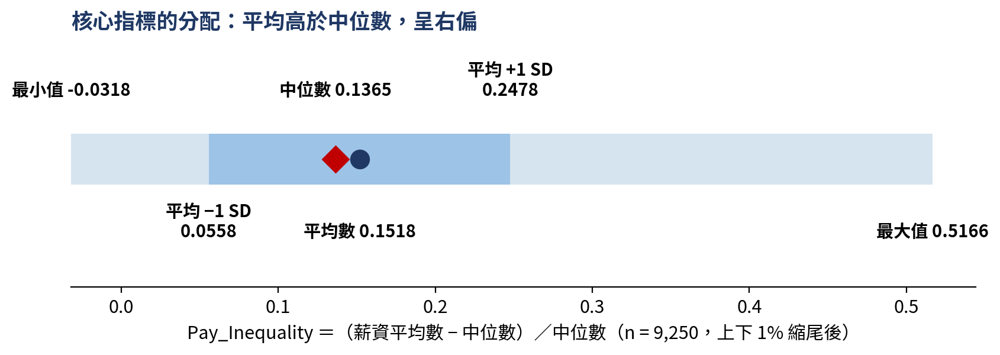
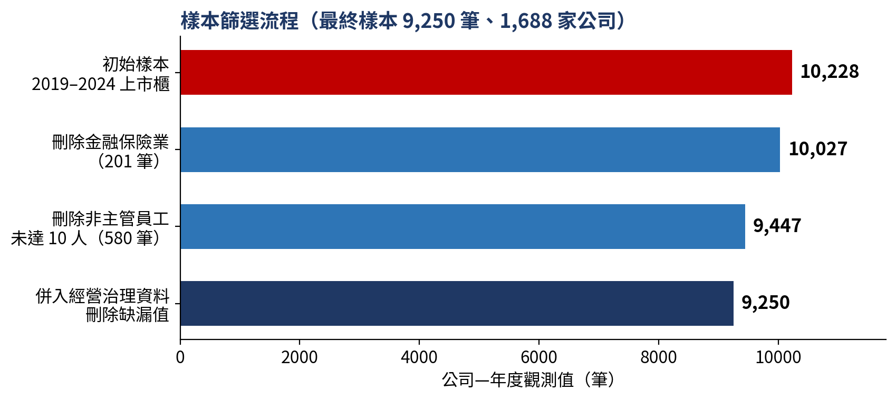
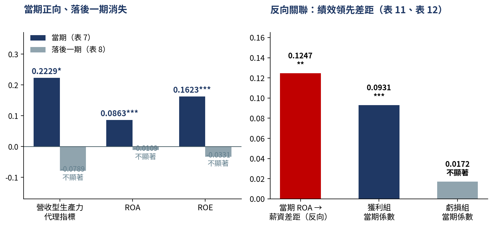

企業是否該刻意拉大內部薪資差距來激勵員工？競賽理論認為差距能形成晉升誘因，公平理論則警告差距可能傷害合作。本研究不用問卷、不用個體薪資，而是用台灣自 2019 年起強制揭露的「非主管全時員工薪資平均數與中位數」，建構公司層級的分配差距指標，問三個問題：
平均數高於中位數越多，表示分配越往高薪端偏斜。樣本平均為 0.1518：也就是平均薪資比中位數高約 15%。要注意，這是公司層級的分配摘要，不是個別員工之間的差距，也無法分辨差距來自職級、年資還是獎金。


資料來源為 TEJ 台灣經濟新報，薪資原始揭露來自公開資訊觀測站。排除金融保險業與非主管員工未達 10 人的公司後，最終樣本為 9,250 筆公司—年度觀測值、1,688 家公司，估計方法為公司與年度雙向固定效果模型。

三個發現合起來指向同一個故事：薪資差距與績效的正相關，集中在「同一個年度」，而且是績效領先、差距隨後。台灣《公司法》第 235 條之 1 要求公司依當年度獲利分派員工酬勞，而揭露薪資採權責發生基礎、包含獎金與員工酬勞——公司當年賺得多，變動給付就把平均數拉高、差距隨之擴大。這是「事後績效連動給付」的同時性關聯，不是「先拉大差距、再換來績效」的證據。
本文的貢獻在於把這兩種長得一樣的相關分開，並提醒：用公司層級薪資摘要衡量分配差距有其推論邊界——揭露資料沒有拆分獎金、員工酬勞與固定薪資，機制只能間接推論，不能直接證明。
本研究以 2019 至 2024 年台灣上市櫃公司非主管全時員工薪資揭露資料，檢視薪資平均數相對中位數差距與公司績效的條件關聯，並區分當期、跨期及反向估計。於 9,250 筆公司—年度觀測值中，公司與年度固定效果模型顯示，當期薪資差距與 ROA 及 ROE 呈顯著正向關聯，與營收／非主管員工人數之關聯較弱，加入產業×年度固定效果後更不再顯著；落後一期薪資差距無法顯著預測後續績效。反向迴歸顯示當期績效及部分落後績效與薪資差距正向相關；以薪資平均數與中位數對數比值為應變數的檢驗亦顯示其與 ROA 正向相關。惟揭露資料未區分員工酬勞、獎金與固定薪資，無法辨識其因果機制。本文貢獻在於區分事前薪酬誘因與事後績效連動給付所產生的觀察性關聯，並提出以公司層級薪資摘要衡量分配差距的推論邊界。
關鍵詞：非主管員工、平均數—中位數薪資差距、競賽理論、績效連動薪酬、公司績效